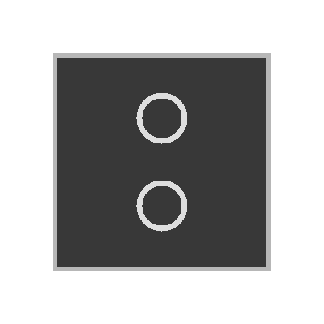
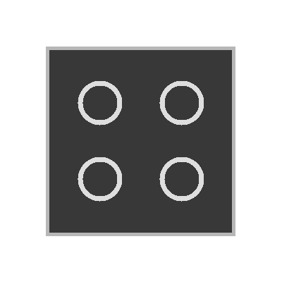
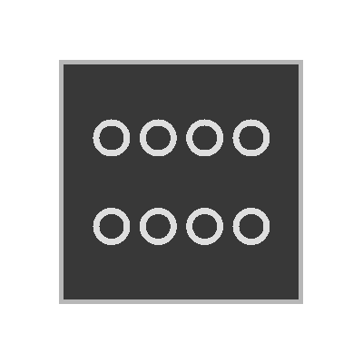

Touch sensors glass device properties
The listed properties are displayed in the Hardware and network editor > Inspector window > Properties tab when the device with KNX PL-Link is selected in the Device view tab.
UP 211 | UP 212 | UP 213 |
|
|
|
|
 |  |  |
|
|
|
|
General and Catalog information
The General and Catalog Information group provides information about the device.
Property | Description | Default value |
|---|---|---|
Mode | Mode shows the network mode of the device. Read only. | KNX PL-Link |
Name | Name is a text field to enter the name of the device. The name is used to identify the device in the device view. | Depends on other settings. |
Comment | Comment is a free text field to enter any helpful information on the device. | - |
Power consumption | Power consumption shows the power the device consumes. Read only. Unit: [mA] The value is used to calculate the remaining power of the KNX rail. See also power consumption and supply on KNX rail of PXC3 or KNX rail of DXR2. | Depends on the device type. |
Short designation | Short designation shows a short description of the device. Read only. | Depends on the device type. |
Order number | Order number shows the device type. Read only. | Depends on the device type. |
Version | Version shows an internal version of the device. Read only. | - |
Description | Description shows a short description of the device. Read only. | Depends on the device type. |
Device information
The Device information group provides information about the device and settings valid for all channels.
Property | Description | Default value |
|---|---|---|
Device address (KNX) | Device address (KNX) shows the fixed standard address for devices with KNX PL-Link. Read only. | 255 |
Serial number used | Serial number used defines the method used for device identification. : The serial number entered in the text field Serial number is used for device identification.
|
|
Serial number | Serial number defines the serial number used for device identification. Serial number is only enabled and relevant if Serial number used is enabled. | 000000000000 |
LEDFeedbackFunction 1) | LEDFeedbackFunction defines if the status LEDs are configured and how the status LEDs have to be configured. None: The status LEDs are not configured. The status LEDs are off. GPDO: Each status LED has to be configured using a separate general digital output. LED Extension 2): The status LEDs have to be configured in the subsystem specific extension Room unit of the BACnet object types Blinds input object (BlsIn) or Lighting input object (LgtIn). | GPDO |
Pulse length for lighting and blinds | Pulse length for lighting and blinds defines how long a pushbutton for lights and blinds commands has to be pressed to be detected as a long key press. Range: 3…70 [0.1 s] | 5 |
Pulse length for scene | Pulse length for scene defines how long a pushbutton for scenes commands has to be pressed to be detected as a long key press. Range: 3…70 [0.1 s] | 5 |
Luminance | Luminance defines the brightness of the orientation light and the status LEDs. 25% 50% 75% 100% | 100% |
 : Device identification has to be done in Web interface. The device has to be in programming mode for Web interface to perform the device identification.
: Device identification has to be done in Web interface. The device has to be in programming mode for Web interface to perform the device identification.1) The LEDFeedbackFunction is only available for pushbuttons with status LEDs.
2) Not supported in Desigo V5.x
The functions table in the Channel Overview provides an overview of the channels of the device. Depending on the device the values in the table are read only or can be edited. The available types depend on the device and the application function.
Property | Description |
|---|---|
Name | Name of the channel. Read only. |
Type | Name of the function. |
Zone | Part of the geographical address of the device. Range: 1...126 |
Room | Part of the geographical address of the device. Range: 1...63 |
Subzone | Part of the geographical address of the device. Range: 1...15 Note |
Activate | Activate defines if the channel is activated. : The channel is activated.
|
Light switching sensor basic (LSSB)
Property | Description | Default value |
|---|---|---|
Rising edge | Rising edge defines the switching behavior of the pushbutton if a rising edge is detected. Inactive: No message is sent. The light is neither switched on nor switched off. Switch off: The light is switched off. Switch on: The light is switched on. Switchover: If the light is on, it is switched off. If the light is off, it is switched on. | Switchover |
Falling edge | Falling edge defines the switching behavior of the pushbutton if a falling edge is detected. Inactive: No message is sent. The light is neither switched on nor switched off. Switch off: The light is switched off. Switch on: The light is switched on. Switchover: If the light is on, it is switched off. If the light is off, it is switched on. | Inactive |
Alarming
Property | Description | Default value |
|---|---|---|
Alarming |
: Alarming is enabled. An Event Enrollment (EE) object is created. |
|